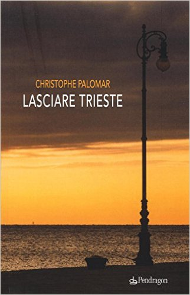

1) “Lasciare Trieste” narra la storia di un manager sempre in viaggio; che non trova mai il tempo di riflettere realmente sulle cose. Leggendolo, ero convinta che fosse un’autobiografia; ma ho scoperto che non è così. Non posso, però, fare a meno di chiedermi quanto di lei ci sia in questa storia.
Questo libro è un romanzo; certo c’è qualcosa di me in tutto quello che scrivo. Il libro precedente “Frieda” (Libreria Utopia) parlava di un industriale tedesco della fine dell’ottocento… ecco, non sono nato alla fine dell’ottocento! In “Lasciare Trieste”, la parte più mia della storia è l’appartamento in cui il protagonista vive, riflette, scrive. Ecco, quello è il mio appartamento, e il libro nasce proprio da quella terrazza meravigliosa, da quella vista meravigliosa. Il resto è narrativa.
2) Si trovano poche notizie su di lei in rete; forse il suo è uno pseudonimo?
n molti mi chiedono se sia un nome ispirato al “Palomar” di Italo Calvino; in realtà è il mio vero nome; per la precisione, quello di mia madre, che è spagnola. Di recente, mi è capitato di trovare in una libreria di Madrid un libro di Carlos Fuentes (“Cristóbal Nonato” ndr), che narra delle ultime settimane di gestazione di un feto… questo feto si chiama proprio come me… e giuro che non lo sapevo.
3) Il suo protagonista dice che “mancava la forza, mancava il coraggio” di scrivere. Lei dove ha trovato questo coraggio, questa forza?
Un po’ per amore un po’ per Trieste (e questo è forse un altro tema un po’ autobiografico del libro). Per Trieste, perché lì ho trovato il coraggio di dire “è arrivato il momento di essere pubblicato”; perché, pur scrivendo da parecchi anni, non avevo la forza di fare questo salto. E per amore, perché la mia compagna mi ha spinto molto a farmi pubblicare e quindi è un po’ un suo regalo (suo e degli altri amici che mi hanno portato alla prima pubblicazione).
4) Il suo libro è un dipinto. Ed è molto teatrale. Quali altre forme d’arte pratica, oltre alla scrittura; e questa ‘teatralità’ è cercata o le è venuta naturale?
Io suono il piano e da ragazzo ho fatto tanto teatro; e la mia visione della letteratura è prettamente teatrale, tant’è che il mio libro precedente è una serie di narrazioni con voci diverse. Credo molto nella voce; per me la letteratura non ha a che fare con la verità o con l’idea; ha a che fare con le voci: la vita si esprime, si incarna attraverso una voce; e il lavoro della voce, secondo me, è tutto. E tutto quello che scrivo, cerco di scriverlo immaginando che qualche attore lo stia leggendo sul palco. Mi piace pensare che chi lo legge, lo faccia ad alta voce. C’è un regista che sta adattando “Frieda” per il cinema e stiamo lavorando anche per farlo diventare una pièce teatrale. Inoltre, con un attore molto bravo, Francesco Izzo Vegliante, abbiamo inciso delle tracce audio del romanzo (disponibili su youtube, ndr). Io leggo tutto, anche le etichette delle bottiglie d’acqua, ma non riesco a leggere me; dunque, ascoltare un attore che mi presta la sua voce è anche l’unico modo che ho per sentirmi: quando ascolto, riesco a dimenticare che stanno leggendo me…
5) Si scrive per riflettere e per capire. Quando decide di scrivere, lo fa dopo aver capito o capisce mentre scrive?
No, io non decido un bel niente. Normalmente, ho un’idea che si esprime sempre attraverso un paio di frasi che mi vengono in mente così. E poi comincio a scrivere; e mentre scrivo il testo si sviluppa. Ad un certo punto, vince lui: in alcuni casi diventa un racconto di 10 pagine, altre volte un romanzo. Ma non ho uno schema. Una volta, ma parlo di vent’anni fa, ho cercato, su consiglio di un amico regista, di strutturare un’idea di romanzo che avevo; ma a forza di razionalizzare le cose, mi sono bloccato, autocensurato. Mi sono detto che non lo farò mai più. E se dovessi riprendere quel romanzo, anzi, quando lo riprenderò, lo farò in maniera molto più intuitiva. Perché la scrittura è vita, è respiro.
6) Nel suo romanzo ho sentito una vena pessimistica, ad esempio quando dice che “è come se a viaggiare fosse il paesaggio e non il suo corpo” o “così funziona con gli uomini: meno sanno e più sorridono. E non appena imparano qualcosa, smettono di sorridere. A volte per anni. A volte per sempre”.
Non so se sia una forma di pessimismo; certo quelli che cita sono versi molto riflessivi: ho voluto un po’ giocare con questa figura centrale, quella del manager, che consuma il mondo in qualche modo come fosse un oggetto, con il suo peregrinare da un aeroporto all’altro, senza mai fermarsi; e questo è anche un modo di sfuggire dalla propria psiche, ai propri pensieri, giustificandosi a se stessi con la mancanza di tempo per riflettere. È proprio questa la funzione di Trieste, in questa storia d’amore… perché questo romanzo è una storia d’amore tra un uomo e una città; una città che è collocata fuori dal tempo, dallo spazio e dall’epoca in cui viviamo. E il manager si sente stordito da questa solitudine, da questo silenzio, da questo isolamento; alla fine, questo disagio che lui esprime verso la città diventa un invito a tornare verso se stesso. È un po’ il pendolo tra il mondo consumistico, inquietante, globale, e questa città sospesa. In molti vedono pessimismo in questo mio libro; per quanto io non lo abbia scritto con questa intenzione, il lettore ha sempre ragione. Per me, però, Trieste, con quel suo grande mare che non si muove mai, permette al protagonista di superare gli stati d’animo, per andare verso un’altra direzione, un po’ meno estetica e un po’ più etica. Per me, questo percorso psichico avviene con toni malinconici, non necessariamente pessimisti.
7) Il suo protagonista definisce Triste come una città da scrittori ma non da lettori. Quali sono le città da lettori?
In realtà, il mio protagonista si sbaglia, perché Trieste è la città che legge di più in Italia. Ma, in generale, le città che leggono sono città più centrali, più vive, dove la lettura dà luoghi a un fermento che a Trieste non si avverte così facilmente, mentre a Milano, a Barcellona, a Vienna sì… Voglio sottolineare che a Trieste c’è un’alta concentrazione di poeti che spesso si ritrovano in Cavana presso la libreria Mondadori. Fra l’altro, avrò il piacere di presentarci “Lasciare Trieste” a gennaio (sabato 21 gennaio, ore 18, ndr)
8) A quali autori si ispira? Ama i thriller? Legge autori scandinavi, nordici?
In realtà non leggo molta letteratura scandinava, ma ho due focolai letterari: il primo è il mondo mitteleuropeo (e quindi viennese); leggo e rileggo di continuo Roth, Musil, Bloch, Schnitzler, von Hofmannsthal etc... Il secondo focolaio è la letteratura di lingua spagnola, soprattutto argentina e cilena. Ma non leggo i thriller, perché… non li capisco; mi piacciono, ma non li capisco (non capisco neppure le sceneggiature di James Bond); faccio fatica, perché guardo altro, mi focalizzo su altro rispetto alla storia e quindi, poi, mi perdo. Tuttavia, il genere thriller è da considerarsi immenso quando non si presenta come tale. Allora sì che mi sento di casa. C’è chi dice che ‘i Demoni’ o i ‘Fratelli Karamazov’ siano i più grandi gialli mai scritti. Anche in epoca moderna, romanzi come ‘Soldi bruciati’ di Ricardo Piglia o i ‘Detective selvaggi’ di Roberto Bolaño sono da considerarsi pietre miliari del genere. Mi piace anche pensare che Borges sia un autore di thriller.
Christophe Palomar
Intervista a cura di Maria Sole Bramante
Di Christophe Palomar su Thrillernord:
 IL LIBRO - Nell'ultimo anno ho scritto quasi tutti i giorni, anche poche righe ma non importa. Importa solo il muscolo. Importa solo la gravità che muove i granelli di sabbia». Racconto di una Trieste non mediterranea, bianca nel suo mare e nel suo marmo, in cui le cose quasi non accadono più, perché fondamentalmente è accaduto tutto. Una Trieste profondamente letteraria, in cui hanno camminato personalità come Saba, Joyce, Svevo, Morand, capace eli essere metropolitana come Tokyo, uggiosa come Amsterdam, luminosa come Brooklyn...